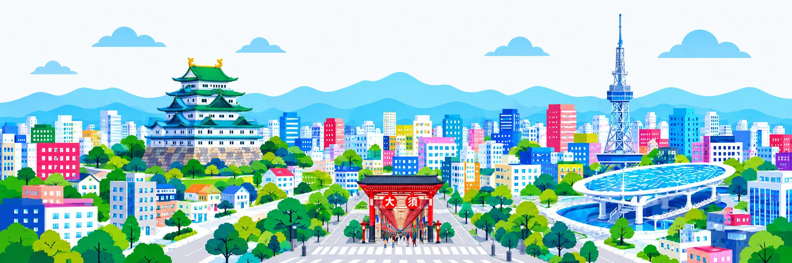

Nagoya, without the stairs.
Step-free routes, elevators & accessible toilets, mapped stop by stop.
A free wheelchair-friendly guide to getting around Nagoya Station, Sakae, Yaba-cho and Osu.
Explore by area
New since 3 Sep 2026: Contactless credit and debit cards (Visa, Mastercard, JCB, American Express, Diners Club, Discover, UnionPay) can now be tapped directly at the ticket gates on every Nagoya Municipal Subway station — no IC card or paper ticket needed. Commuter passes are not yet supported this way. Official details.
Asian Games
Aichi-Nagoya
Accessibility Guide
Aichi-Nagoya
2026
Accessibility Guide
Venues, nearest stations and step-free routes for the Games — in one place.
Open the guide